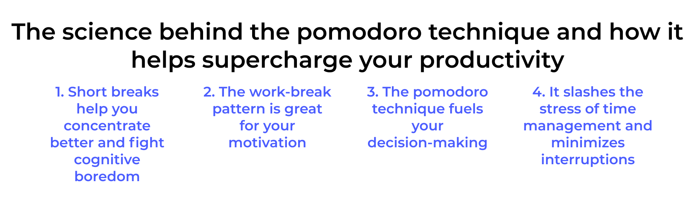
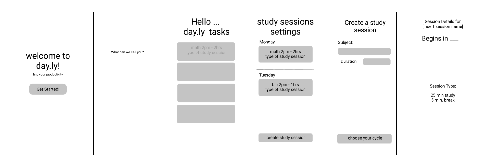
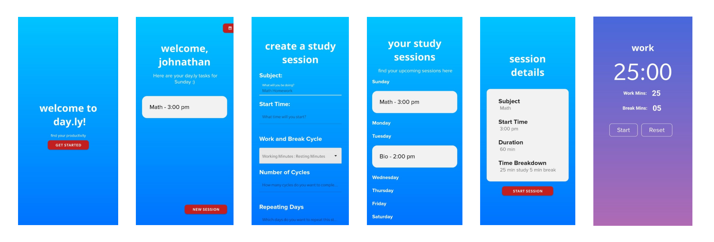

day.ly
With COVID-19 and the transition to online education, students have found it
harder to pay attention to lectures and homework assignments, resulting in increased procrastination
and decreased productivity.
Background
With the COVID-19 pandemic, students have made the hard transition from in
person
to online classes, leading to an decreased rate of motivation. Students who often went to cafes to
study
could no longer due to lockdown restrictions, resulting
in this need for different ways to combat this unmotivated mindset. We found that with reliance on
Pomodoro
techniques where there are allocated work and break times, students could set their schedule back on
track.
Prior to the pandemic, my friends and I often did our homework at UCSD's Canyon Vista (dining hall). Given the nature of a cafe, we were able to focus and get a lot of work done. However, with COVID-19 and lockdown restrictions, we were no longer able to study and do our work in public cafes. We were introduced to the Pomodoro timer but found that it was just as easy to “pause” the timer and go back to taking breaks. We figured that students need something that would keep them on schedule while having allocated break times
Prior to the pandemic, my friends and I often did our homework at UCSD's Canyon Vista (dining hall). Given the nature of a cafe, we were able to focus and get a lot of work done. However, with COVID-19 and lockdown restrictions, we were no longer able to study and do our work in public cafes. We were introduced to the Pomodoro timer but found that it was just as easy to “pause” the timer and go back to taking breaks. We figured that students need something that would keep them on schedule while having allocated break times
Solution
day.ly - find your productivity (iOS)
Inspired by online education that leverages Pomodoro strategies to
effectively balance
work and relaxation. day.ly promotes time management and users are able to attack their time
management problems
head on by cutting down interruptions and defining set objectives. day.ly takes the Pomodoro
technqiue and integrates
it with a schedule planner in order for students to visualize what exactly needs to be done within a
timeframe.
Features:
Features:
- Study sessions with recurring days - create recurring study sessions with custom or preset Pomodoro timer
- Dayly view of sessions - view what is needed to be accomplished for the day
- Weekly view of sessions - view what is needed to be accomplished for the week
User Research/Needfinding
When asking our peers, we found that students often side tracked from their
current
assignment, distracted by other tabs running or by their phone. They told us that the environment at
home was too
comfortable and hard to concentrate. This led us to investigate what has currently been done to
alleviate this.

The pomodoro technique, with its allocated work and break time, seems to find productivity for some, however issues arrise when a student decides to take more break than needed. We found that students then needed a variant of a schedule integrated with the timer to effectively keep them on track.
UI Design
We used Figma to design our app's UI. Starting with the Mockup, we gauged
what elements we wanted on our screens and refined that to our Final.
Mockup

Final

Programming
For our technologies, we used React Native, Expo and Redux.
I focused more on the front end, leveraging React Native and React Native Paper library to code various screens of our UI. I further tested our functionality through syncing with Expo and Node.js. In the back end, I worked on creating the Pomodoro timer using React Native.
I focused more on the front end, leveraging React Native and React Native Paper library to code various screens of our UI. I further tested our functionality through syncing with Expo and Node.js. In the back end, I worked on creating the Pomodoro timer using React Native.
Challenges we faced
Given the remote setting of this hackathon, we found it rather difficult to
resolve any merge conflicts and debug together. However, we were able to resolve this through being
verbal in our call and communicate every step we took to produce certain errors. Aside from
communication issues, we were also challenged by the frameworks. For all of us, it was our first
time using React Native and this was a great learning experience! We had two first time hackers who
were able to adapt to the hackathon environment.
Reflection
Being that this project was for a hackathon, I found myself pulling my first
all nighter to
work with my group members and learned to build an MVP given a 1.5 days. This was my first time
working
on front end with React Native and I learned how to leverage its libraries to create cleaner looks
efficiently. I also found myself delving deeper into the idea of the Pomodoro technique itself and
became
more knowledgable on study habit techniques and the psychology behind it. Possible improvements this
project
could have expanded on given more time include more extensive user testing to find bugs in our app
and a cleaner
organization to our view (so it's not just a long scroll of tasks).
Sources